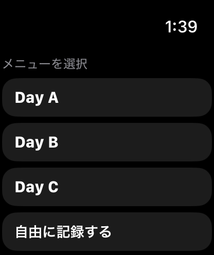
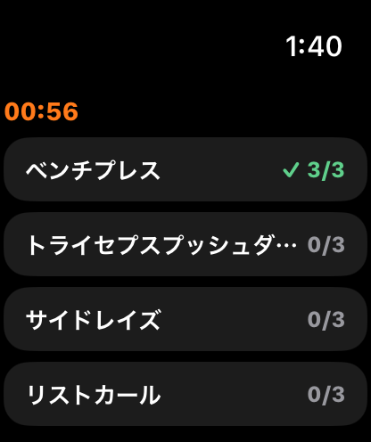
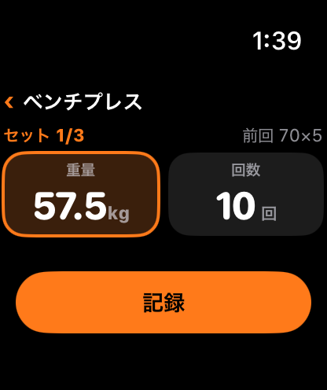
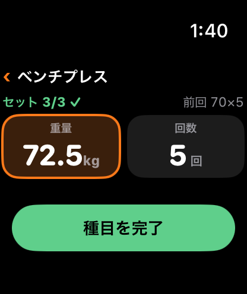

LiFTYはApple Watchに対応しています。iPhoneを取り出さなくても、手首の上でワークアウトの開始から完了まで記録できます。Apple Watchでの記録は、iPhoneの記録と同じ1つのセッションとして扱われます。
使うための条件
- iPhone（iOS 18以降）と、ペアリング済みのApple Watch（watchOS 11以降）が必要です。
- iPhoneにLiFTYを入れると、ペアリング済みのApple Watchにも、Watch用のLiFTYアプリが入ります。
- 追加の料金はかかりません。
Watchだけでワークアウトを記録する
- Watchのホームから、今日の場所とメニューを選んで開始します。メニューを選ばず「自由に記録する」こともできます（種目は、直近に使った種目・よく使う種目から選びます）。
- 種目の一覧が出ます。各種目の進捗が見え、どの順番でも記録できます。
- 種目を開いてセットを記録します。重量と回数は、目標の値が最初から入っています。
- 全種目が終わったら「ワークアウトを完了」。サマリーを確認して保存します。


iPhoneが近くになくても記録できます。圏外の間はWatchに記録を貯めておき、iPhoneとつながったときに自動で送ります。
Digital Crownで重量・回数を変える
重量か回数の欄をタップしてフォーカスし、Digital Crownを回して値を増減します。重量の刻み幅は、種目ごとに設定した「重量の増分」です。回数は1回刻みです。目標どおりなら「記録」を1回押すだけです。


- 左右を分けて記録する種目は、左右を切り替えて記録できます。保存すると、次の側へ自動で移ります。
- 種目の目標セット数に達すると、ボタンが緑の「種目を完了」に変わります（iPhoneと同じ判定です）。
iPhoneで始めた記録に、途中からWatchで合流する
iPhoneで開始したワークアウトが進行中なら、Watchのホームに「ワークアウトに合流」が出ます。合流した時点から、Watchで心拍・消費カロリーの計測が始まります。同じ種目をiPhoneとWatchで同時に記録することは想定していません。
iPhoneとWatchは、種目の一覧を見ているか、どの種目のセット記録画面を開いているかをそろえます。Watchで記録したセットを取り込んだとき、iPhoneがセット記録画面を表示中なら、その種目へ切り替わります。
有酸素はストップウォッチで計測
- 有酸素の種目で「開始」を押すと、経過時間・現在の心拍・消費カロリーが表示されます。一時停止・再開もできます。
- 「終了」を押すと、時間（秒単位）・平均心拍・消費カロリーを確認できます。
- 「記録」で確定します。確定せずに10分たつと、自動で保存されます。「やり直す」で計り直すこともできます。
手首を下げて画面が消えても、計測は開始時刻を基準に続きます。Watchで有酸素を計測している間、iPhoneの該当種目は入力できなくなり、Watchからのライブの値が表示されます（二重に登録しないための仕様です）。
心拍・消費カロリーの記録
- ワークアウト中、Apple Watchが心拍と消費カロリーを計測します。
- 有酸素の記録には、5秒間隔の心拍が保存されます。iPhoneの過去の記録・進捗（種目詳細）で、平均・最大の心拍と折れ線グラフを見られます。
- 消費カロリーは、Apple Watch自身の推定値です。LiFTYが計算しているものではありません。心拍や手首の動きから推定するため、動きの少ない筋トレは、有酸素運動より誤差が大きくなりやすいとされています。目安としてご利用ください。
ヘルスケアとの関係
Apple Watchで記録したワークアウトは、Watch自身が、消費カロリーの推定値を含むワークアウトとして、直接ヘルスケアに保存します。iPhoneからは、同じワークアウトを重ねて書き出しません。そのため、ヘルスケアに同じ運動が2件並ぶことはありません。この動きは、設定の「ヘルスケア連携」でのオン・オフの組み合わせに関わらず同じです。詳しくは体の記録・目標・ヘルスケア連携もご覧ください。
Watchでできないこと
小さな画面に収まらない操作は、iPhoneで行います。
- RPE・メモ・ウォームアップ（W）の入力。Wは、メニューの目標で指定されていれば、Watchでも反映されます。ほかはiPhoneの修正画面から、あとで追記できます。
- 種目の追加、過去の日付への記録、記録の編集。
- 記録完了時の「次回の目標を更新」の提案。Watchで完了した場合は、iPhoneを開いたときに、ホームのカードで操作を促します。
iPhoneとWatchの記録の整合
- iPhoneでワークアウトを完了または中断すると、Watchも計測を止めてホームに戻ります。
- Watchで完了した記録は、iPhoneを開くと取り込まれます。同じ記録をiPhone側でも完了操作しても、二重にはなりません。
- iPhoneで今日の休息日を宣言している間は、Watchの「ワークアウトを開始」も使えません。
うまく連携しないとき
Watchの記録がiPhoneに出てこないときは、次の点を確認してください。
- iPhoneのLiFTYアプリを一度開く（Watchからの記録は、iPhoneを開いたときに取り込まれます）。
- iPhoneとApple Watchがペアリングされ、Bluetoothが有効になっている。
- Watchの記録は、つながるまでWatch内に残ります。消えることはありません。
解決しない場合は、サポートへご連絡ください。
LiFTYは、アカウント作成なしですぐに記録を始められる筋トレ記録アプリです。
App Storeでダウンロード